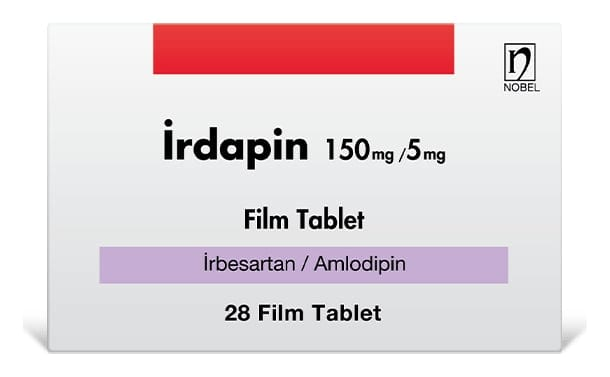

İrdapin 150 mg/5 mg Film Kaplı Tablet, 28 Adet

Ne için kullanılır
KT · Bölüm 1İRDAPİN kan basıncının düşürülmesine yardımcı olan, irbesartan ve amlodipin içeren bir ilaçtır ve 28 film kaplı tablet halinde kullanıma sunulmuştur.
İRDAPİN, tek başına irbesartan veya amlodipin içeren ilaçlarla yeterli derecede kan basıncı kontrolü sağlanamayan hastalarda kullanılmaktadır.
Uyarılar ve önlemler
İRDAPİN aldıktan sonra karın ağrısı, bulantı, kusma veya ishal yaşarsanız doktorunuzla konuşun. Doktorunuz daha ileri tedaviye karar verecektir. İRDAPİN almayı kendi başınıza bırakmayınız.